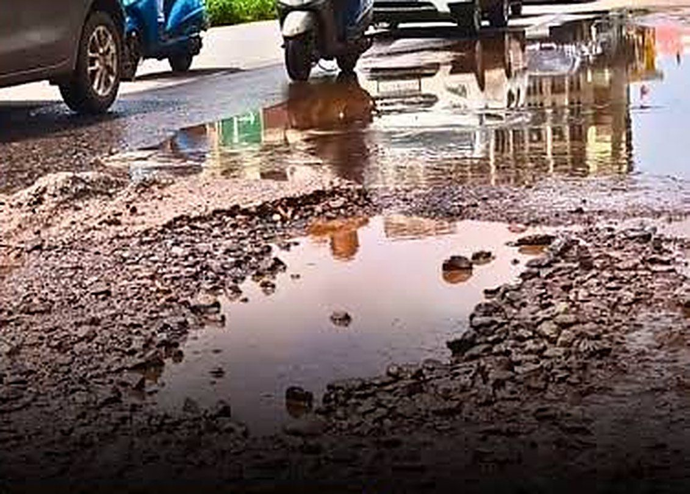
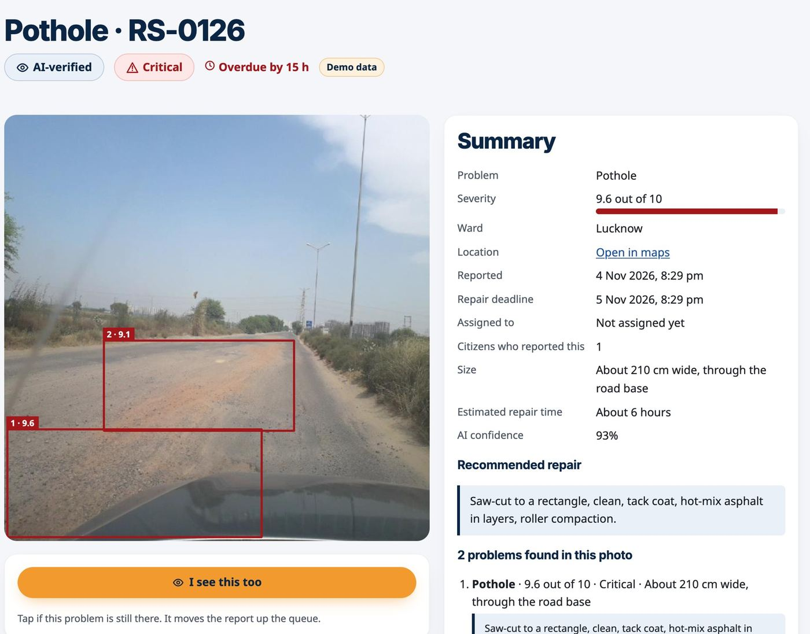
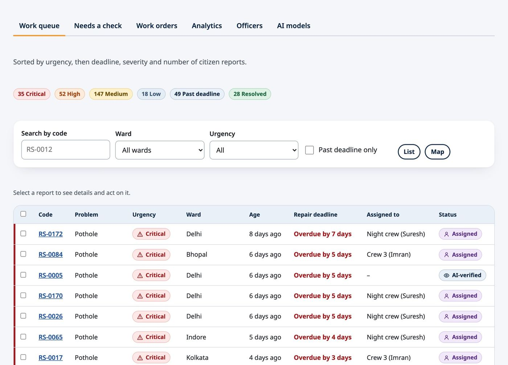
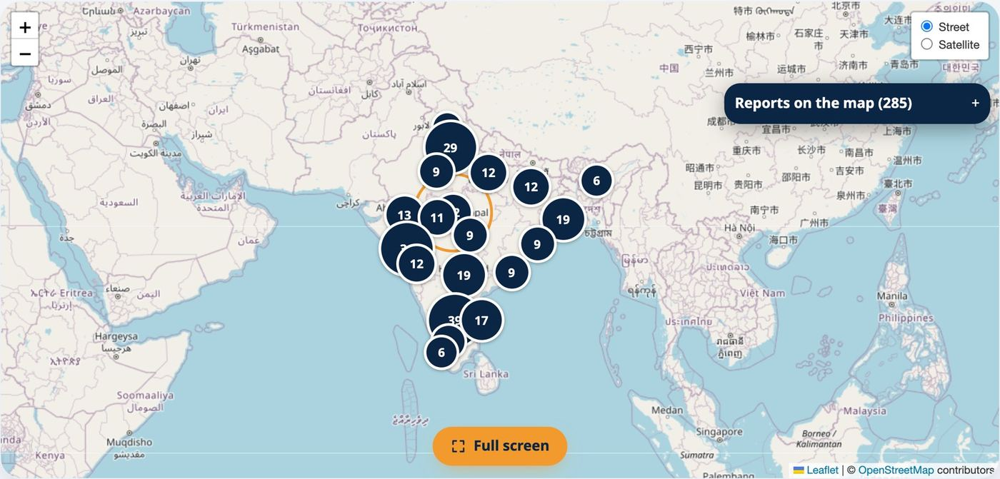
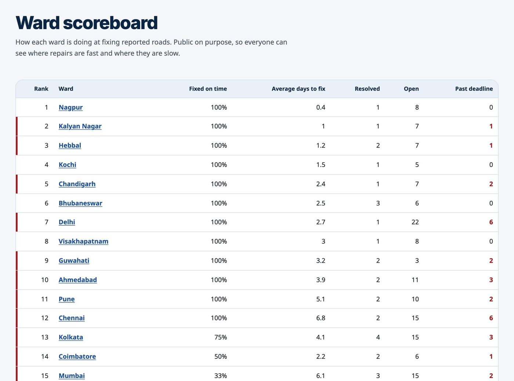
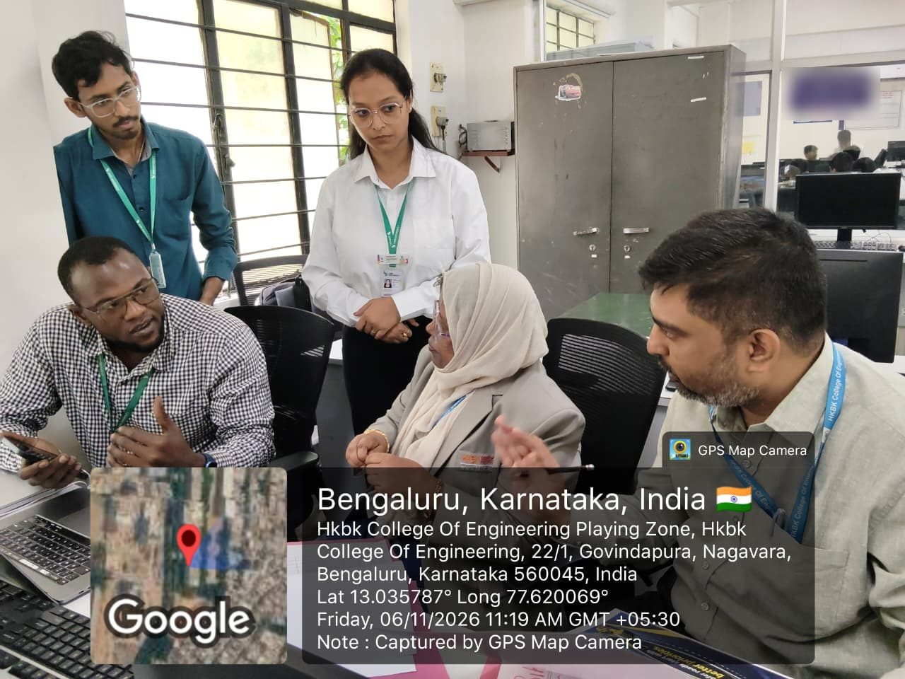
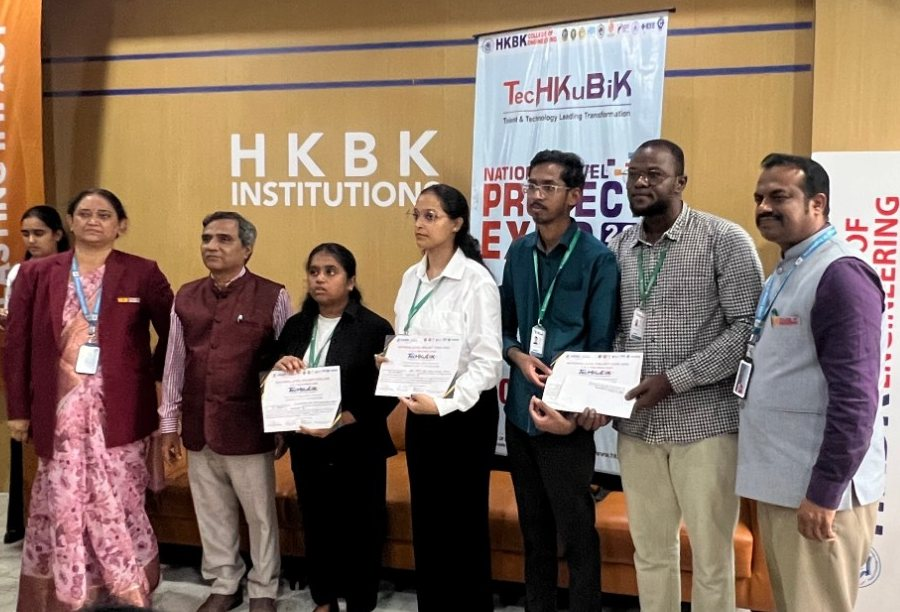
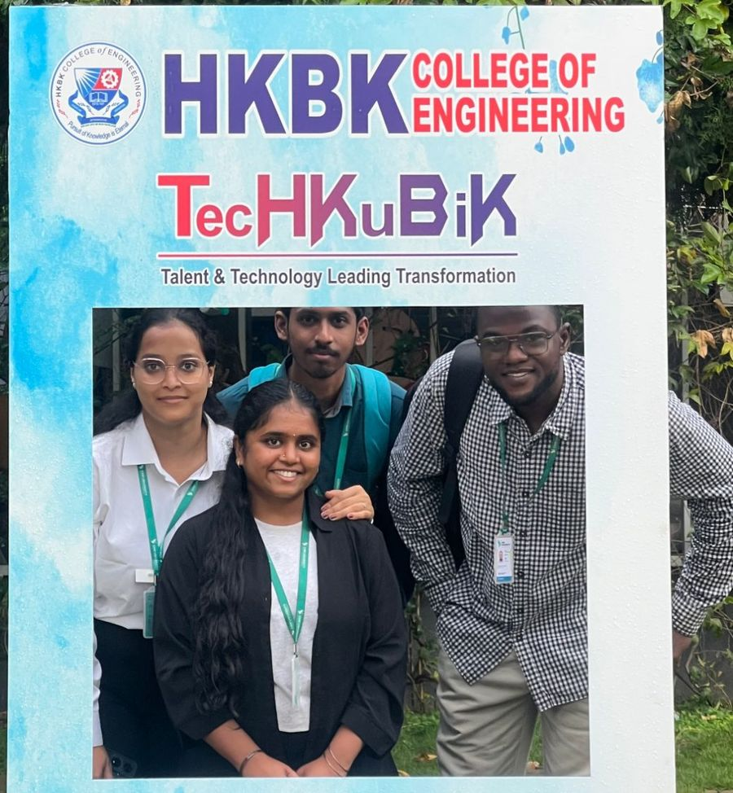

Another victim of neglected roads: the story of RasteScan
That word was on a news thumbnail: “Another Victim of Neglected Roads”. A woman hurt by a pothole, under a headline that already expected the next one. RasteScan is what we built in reply: a public record of road damage that anyone can read, from a citizen's photo to the proof of repair.
Best Socially Relevant Project at the TechKubik National Level Project Expo 2026, HKBK College of Engineering, Bengaluru. Built by Aaditi Varsha, Chaitanya, Ibrahima and Vishnu, MCA students at CMR University.
The picture we started from
The thumbnail has two halves. On the left, a woman sits on the ground while people hold her up. On the right is the hole, full of water, with scooters and cars already steering around it.
This page shows only the right half. The hole is the part we can do something about.

9,438 people in five years
“Another” is accurate. In a written reply to Parliament, India's road transport ministry counted 23,056 pothole-related accidents from 2020 to 2024. They killed 9,438 people and injured 19,956, of whom 9,670 were hurt grievously.
Show the numbers as a table
| Year | Deaths |
|---|---|
| 2020 | 1,555 |
| 2021 | 1,481 |
| 2022 | 1,856 |
| 2023 | 2,161 |
| 2024 | 2,385 |
| Total | 9,438 |
Source: Ministry of Road Transport and Highways, from state police reports, as reported by Outlook with PTI (see the sources below).
These numbers only count what police recorded as pothole-related. Uttar Pradesh reported 5,127 of the deaths. Andhra Pradesh, Bihar and Goa reported none at all in five years. We cannot tell from the figures how much of that gap is roads and how much is record keeping, and that is part of the problem.
A total cannot tell you which road
Road damage reaches a city as a WhatsApp photo, a social media post or a call to the ward office. Someone has to look at each one, work out what it is and how dangerous it is, and decide who should go. An open manhole and a hairline crack wait in the same pile.
Then the results come back as a total. In August 2026, Bengaluru's civic body told the Karnataka High Court it had identified and repaired 10,202 potholes since April, and the court directed it to file an affidavit on the mechanism it uses. A total like that cannot tell you whether your road was one of them, or how long it took.
So we gave RasteScan two jobs: sort the pile by danger, and put every step where anyone can check it.
One report, from photo to proof
A person standing next to a hole needs a phone and nothing else.
Report
A photo and a location. No login. The portal speaks English, Kannada and Hindi, and if there is no signal the report waits in an offline queue.
Protect
Faces and number plates are blurred before the photo is stored or sent to any AI.
Inspect
Pixel analysis finds the road surface and the damaged patches first, with no model and no network. The vision model gets those patches as hints. Its boxes are then checked: any on a car, a building or the sky are dropped.
Rank
The server sets the urgency and the repair deadline. Officers work one queue, ordered by urgency, then deadline, then severity, then how many citizens reported the spot. Every report also gets an indicative repair cost.
Prove
The crew uploads a photo from the site and the AI checks it. If the damage is gone, the public page shows Resolved with before and after photos. If not, the report is reopened and assigned again.


Demo data. Left: a photo from the RDD2022 dataset with its human-drawn labels, and a made-up place and date. It shows the result format, not model output. Right: the officer queue with demo reports and crew names.
The model suggests. The server decides.
A vision model is good at describing a hole. We do not let it decide how urgent the hole is. It returns a severity score, and these few lines, in plain Python, do the rest:
# backend/app/schema.py
def urgency_for(result: Detection) -> Urgency:
if result.hazard_type == "Open Manhole":
return "CRITICAL"
s = result.severity_score
if s >= 9.0:
return "CRITICAL"
if s >= 7.0:
return "HIGH"
if s >= 4.0:
return "MEDIUM"
return "LOW"| Urgency | Rule | Repair deadline |
|---|---|---|
| Critical | Severity 9 or more, or any open manhole | 24 hours |
| High | Severity 7 to 8.9 | 48 hours |
| Medium | Severity 4 to 6.9 | 7 days |
| Low | Severity below 4 | 90 days |
The same idea runs through the rest of the system:
- An open manhole is always critical, whatever score comes back.
- Unsure goes to a person. Under 60% confidence, a report waits for human review before it is published.
- Bad answers are rejected. Every answer must pass a strict schema. If it fails, the server retries once, then asks the citizen to try again.
- A busy AI loses nothing. The report is saved as waiting and a background worker finishes it later. Nothing unchecked is published.
- The price is arithmetic. The model supplies the measurements; the server works out the cost. Demo report RS-0126 comes to ₹30,074: 3.05 tonnes of hot-mix asphalt plus six crew hours. It is a budgeting estimate, not a tender.
Public by default, private where it matters
Anyone can see
- Every report and its blurred photo
- Severity, urgency and deadline
- Ward, assignee and status timeline
- Before and after photos
- Repair cost, map and CSV export
Never shown to the public
- Device ID
- Contact email
- A citizen's private note
- Officer email addresses
Automated tests guard that line, and every change to a report lands in an audit trail.


The public map and ward scoreboard. Demo data, with sample ward boundaries: these are not real city figures.
Three days in the commit log
The repository's first commit is dated 4 November 2026, the day before the expo opened. By the afternoon of the 6th there were 61. Not all of them went forward.
4 November: the whole shape
Design, inspection prompt and result schema came first. Then the backend, web portal, Android wrapper, CI and a Terraform and Ansible deploy, followed by the public map, officer dashboard, analytics, Kannada and Hindi, and offline reports.
5 November: the AI fights back
Amazon Bedrock was locked for us, so the deploy learned to run in test mode and Groq came in as a second provider. The Groq model we had chosen, Llama 4 Scout, was shut down, so we switched. Ollama and a YOLO detector went in overnight and were gone by the afternoon. Azure came in. Then pixel analysis, before and after the model, to give it hints and to check its boxes.
6 November: people have to use it
Repair costs and an Impact page. 200 demo reports from real road photos. A Flutter app for citizens and officers. PIN code and state on every report, on the web and in the app.
Only a working model
The expo poster had a line we liked: “Only working model will be allowed”. No slides standing in for software. So we brought the real thing on our own laptop: send a road photo, watch it get analysed, open the officer queue, assign the job, fix it, and see the public page, map and scoreboard change.

Our first review from outside the team came from an auto driver: 40 seconds in Kannada, recorded by us, from someone who spends his working day on these roads. One voice is a start, not a study.
Best Socially Relevant Project
RasteScan won the Best Socially Relevant Project award at the expo, along with a cash prize. We are four MCA students from CMR University: Aaditi Varsha, Chaitanya, Ibrahima and Vishnu.


At the prize giving and at the expo's photo frame, HKBK College of Engineering, Bengaluru.
A prize does not fix a road, which brings us to the next part.
What we have not proved
A road-safety tool that oversells itself is worse than none, so here is where it really stands.
Working today
- The full flow: report, AI, queue, repair, public proof
- The public portal in three languages, the officer dashboard, and an admin page that compares AI models on one photo
- A public demo, a Flutter app and a Capacitor Android build
- 108 backend tests passing, and three CI jobs for backend, web and infrastructure
Not proved yet
- AI accuracy. We have not measured it on a labelled set of local photos.
- Real use. The demo reports use public dataset photos with made-up places and dates. No city has used this.
- The public demo runs in test mode. Its AI results are sample answers, and the site says so on screen.
- Costs and boundaries. Costs are indicative, using rough Indian municipal rates, and the ward boundaries are samples.
Next
- Label 20 to 30 local photos and run the comparison we already built (
make evaluate) - Replace the demo data with our own Bengaluru cases
- Pilot with one ward office, using its real boundaries and rates
- Measure time to fix and how many reports are verified
How it is built
A deliberately simple system. The AI is one replaceable box, and everything around it is plain, testable code.
What I took from it
- Put the model in a box. Bedrock was locked, a Groq model was shut down, and Azure's reasoning models needed their own handling, all inside two days. The urgency rules stayed put, because none of them lived inside a provider.
- Decide what the AI may never decide. Writing “an open manhole is always critical” in code took a few lines, and it removes a whole class of failure.
- Label the demo. Every seeded report carries a Demo badge, and test mode says so on screen. A civic tool lives on trust, so it should be easy to see what is real.
The demo runs from a development machine, so it may sometimes be offline. Contact me if you would like to see it running.
Sources and credits
- National figures: Outlook India, 14 February 2026, with PTI, reporting the minister's written reply to Parliament.
- Bengaluru and the High Court: LiveLaw, 14 August 2026.
- Pothole photo and headline: a news video thumbnail. Rights remain with the publisher. On this page, the injured person, the channel logo and the printed headline are cropped out.
- Demo road photos: RDD2022 (Arya, Maeda, Ghosh, Toshniwal and Sekimoto, Geoscience Data Journal, 2024), used under CC BY, with labels from the dataset.
- The site name and emblem in the app are generic placeholders, not those of any government body. Type: Barlow Condensed (SIL Open Font License).